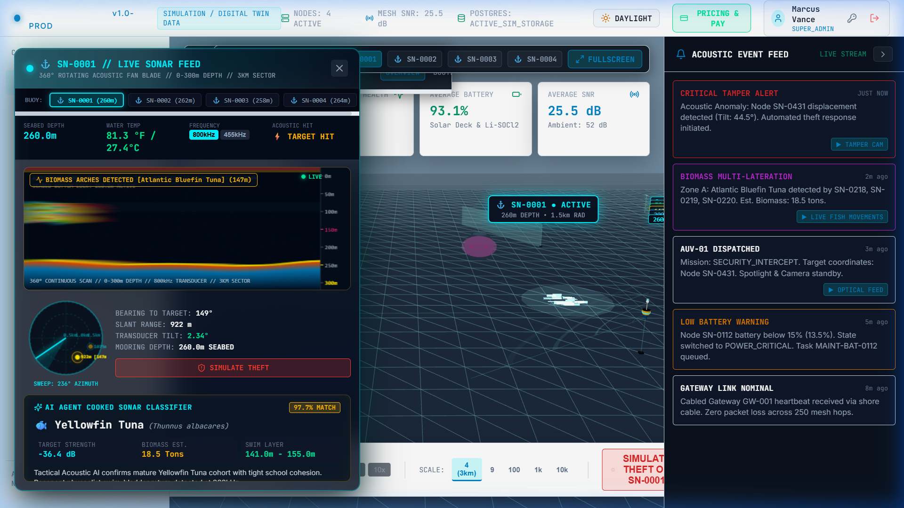
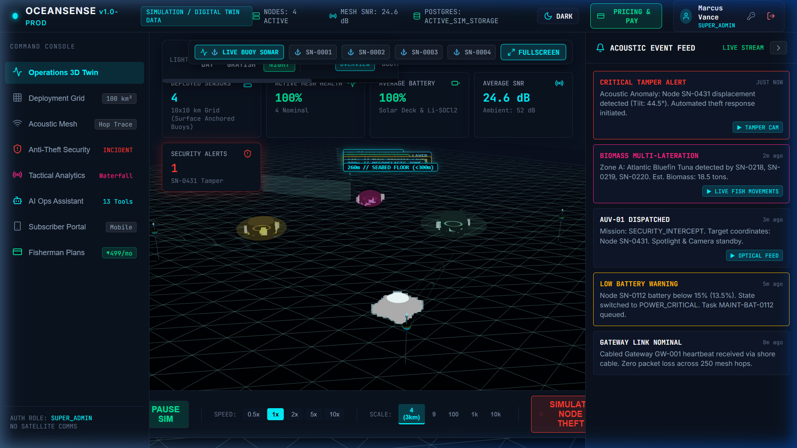
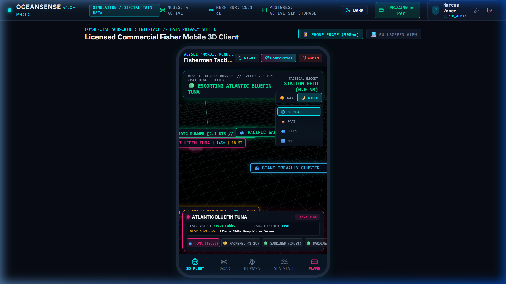
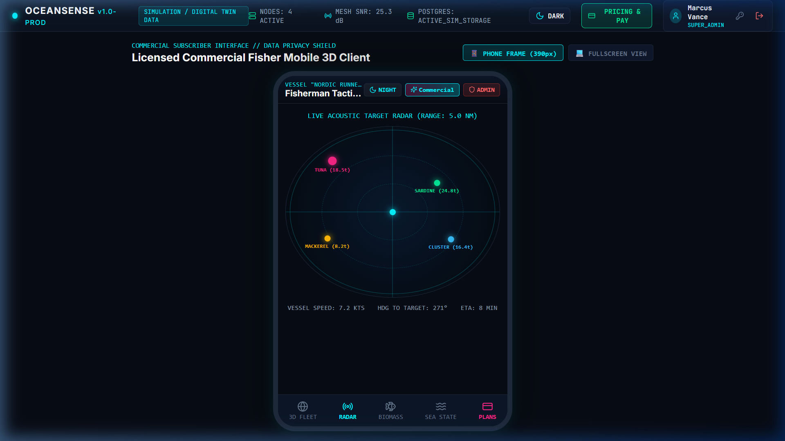
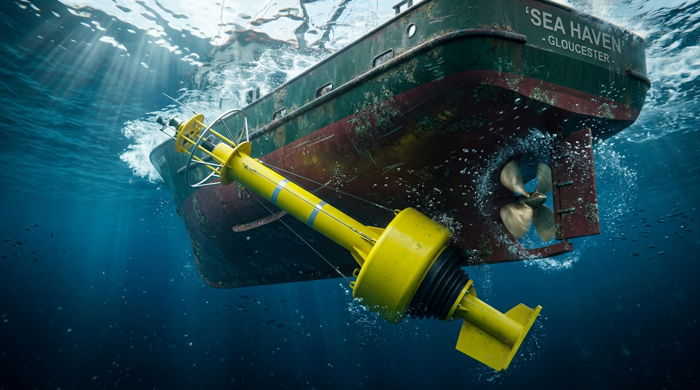
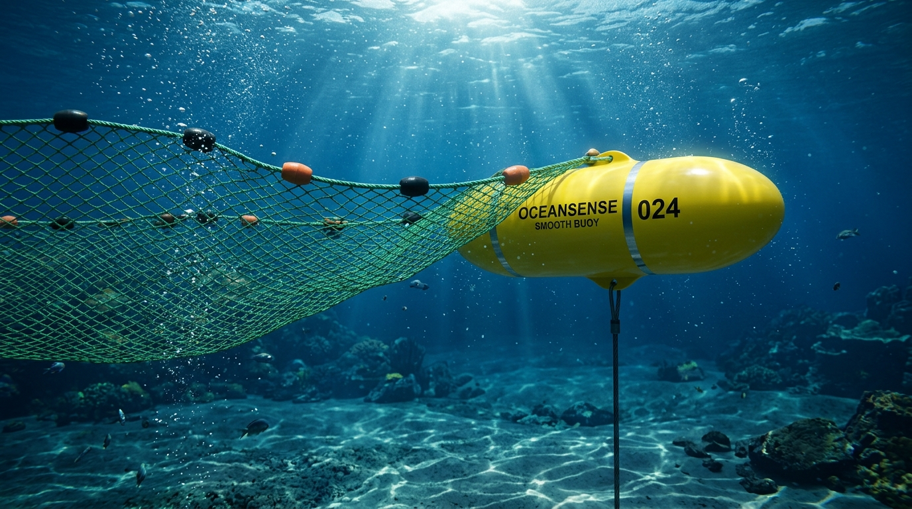
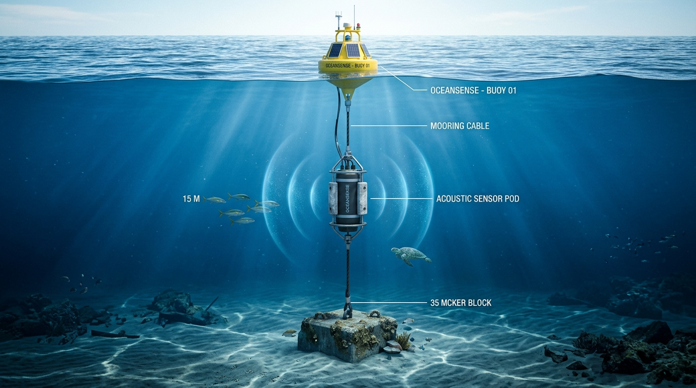
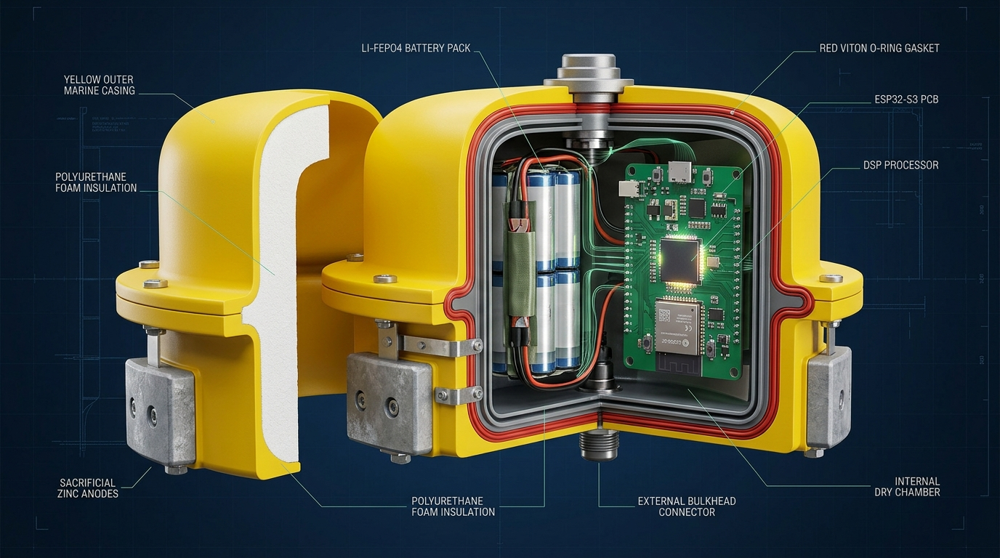
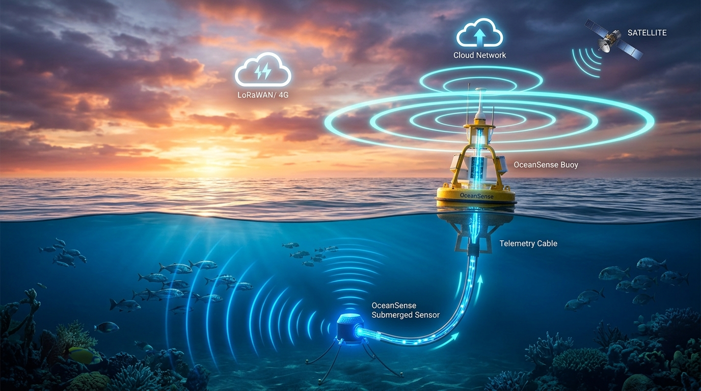
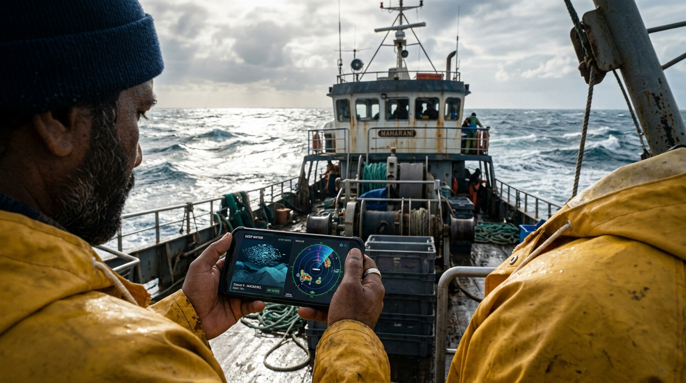

Figure 3.7: Live 3D WebGL Physics Simulation Studio (Interactive In-App Physics Engine)

Figure 3.8: Tactical Sonar Waterfall Echogram & 360° PPI Radar Scope Display
OceanSense oru **Autonomous Underwater Acoustic Monitoring System & Real-Time 3D Digital Twin**. Namma GWC DATA.AI Full Stack Developer Internship-la 12 weeks padicha comprehensive technical stack-ah use panni, kadalukulla floating sonar buoys (nodes) moolama meen kootangal (Tuna, Mackerel, Sardine, Trevally) enga irukku, evlo depth-la irukku, and endha direction-la swim aaguthunu live-ah detect panra system.
Intha live data-va Operations Center Desktop screen-kum, kadalula pora meenavargaloda mobile phone-kum (2D Radar & 3D Twin) millisecond-to-millisecond sync panni transmit pannuvom.



Official GWC DATA.AI 12-Week Full Stack Training Roadmap (480 Hours) concepts ovvondrum OceanSense-la exact-ah implement aagirukku:
| Internship Week | Syllabus-la Padicha Topics | OceanSense Capstone Project-la Epdi Implement Pannom? |
|---|---|---|
| Week 1 HTML & CSS |
HTML5 semantic elements, forms, accessibility, CSS3 flexbox & grid, transitions/animations, mobile-first responsive design, BEM/CSS modules. | Semantic layout (<nav>, <aside>, <main>, <canvas>), multi-theme tokens (Daylight, Night Abyssal, Technical Gray), tactical glassmorphism HUD overlays, and responsive mobile container design. |
| Week 2 React Framework |
Components, props, state management, hooks (useState, useEffect, useRef, useMemo, useCallback), component lifecycle, controlled forms. |
Modular React UI with throttled 400ms HUD update cycles (preventing 60fps re-render thrashing), modal workflows (FishermanSubscriptionModal), and dynamic cluster listings. |
| Week 3 Dev Tools |
Tailwind CSS utility framework, Git branching & merge conflicts, GitHub PRs/issues, Postman API collections, Chrome DevTools debugging. | Git feature branching (feat/3d-simulation-sync), structured commits, Postman API test collections for node ingestion, and Chrome DevTools performance memory profiling. |
| Week 4 Backend & Realtime |
RESTful API architecture, HTTP methods, Fetch API, async/await, WebSocket protocol for bidirectional real-time communication, Appwrite/BaaS CRUD. | Full-duplex WebSocket client/server architecture (wsClient) streaming real-time acoustic pings and node status broadcasts without HTTP polling overhead. |
| Week 5 Node.js Backend |
Node.js runtime, event-driven architecture, NPM packages, Express.js routing, middleware architecture, error handling, CORS, security headers. | High-throughput Express.js backend with controller-service architecture, structured error handling middleware, request validation, and Node.js EventEmitters for sonar events. |
| Week 6 Security & DB |
Auth vs Authorization, JWT tokens, refresh strategies, Bcrypt password hashing, custom middleware, RBAC; Relational DB (MySQL/Postgres) design, normalization, ACID transactions. | JWT authentication with multi-tenant RBAC (SUBSCRIBER vs OPERATOR vs ADMIN), password salting, and 3NF relational PostgreSQL schema with ACID transaction isolation. |
| Week 7 Full Stack App |
Full stack project structure, frontend-backend integration, state management, protected routes, file uploads, Swagger/OpenAPI docs, logging strategies. | Integrated React frontend with Node/Postgres backend, protected subscription views, centralized error boundary logging, and unified environment configuration (sample.env). |
| Week 8 TypeScript & State |
TypeScript fundamentals (interfaces, generics, type aliases), React with TypeScript, Redux Toolkit / Zustand store slices, actions, and type safety. | End-to-end type safety using TypeScript interfaces (FishSchoolData, LiveFishCluster), and Zustand global stores (useFishSchoolStore, useAuthStore, useThemeStore). |
| Week 9 BI & Data Viz |
Business Intelligence principles, KPI frameworks, Domo platform dashboard design, interactive charts, ETL processes, data storytelling. | Tactical Analytics Dashboard with rolling Sonar Waterfall Echogram (Figure 3.1), 360° PPI radar scope with 40s phosphor persistence, and economic catch valuation cards. |
| Week 10 Advanced Database |
Complex SQL joins, subqueries, CTEs, window functions (ROW_NUMBER, RANK), stored procedures, triggers, views, query optimization (EXPLAIN), indexing, migrations. |
PostgreSQL migrations (001_initial_schema.sql to 004_triggers_and_audit.sql), spatial coordinate queries, automated audit triggers, B-tree indexes, and seed scripts. |
| Week 11 DevOps & Production |
Docker containerization, Docker Compose, CI/CD with GitHub Actions, application monitoring, production security (Helmet, rate limits, SQLi/XSS defense), Vite bundling. | Containerized multi-service architecture via Docker Compose, automated CI/CD pipeline (.github/workflows/ci-cd.yml), Helmet headers, and production Vite minification. |
| Week 12 Capstone Defense |
Comprehensive capstone integration, technical architecture presentation, hardware testing scripts, monetization strategy, and code review defense. | Unified WebGL 3D Digital Twin (Three.js), external hardware testing harness (external_sonar_transmitter.py), unit economic models, and professional mentor documentation. |
Mentor kekkum mukkiyamaana kelvi: "Kadalula buoy node podradhaala matha meenavargal valai (nets) sikkura prechanai varuma? Oruvela spedd-ah vara boat node mela modhitta enna aagum?" OceanSense-la idhukaagave specialized maritime hardware engineering pannirukkom:
Buoy-oda surface ultra-smooth High-Density Polyethylene (HDPE) Teflon coating-la irukkum. Velila entha hooks, brackets, or kambi kooda irukkadhu. Drifting gillnets and valai ropes sikkama smooth-ah slip aagi poirum.
Kadalula loose-ah floating ropes pottal thaan valai sikkum. Namma vertically-taut stainless steel synthetic jacket cable use panrom. Thanni kulla idhoda cross-section verum 8mm thaan, so valai matturadhuku vaaippe illa.
Surface-la verum chinna float antenna mattum thaan irukkum. Main acoustic sensor pod kadalukulla 15 meters aazhathula thongum. Meenavargaloda surface driftnets (0–8m depth) namma node-ku mela smooth-ah poirum.
Node 35 kHz sound pulses anuppi boats-oda fishfinder-la hazard alert kaatum. Koodave marine AIS signal anuppi boat GPS chartplotter-la red warning circle kaatum.
Kadalula namma node epdi survive aaguthu, boat collision, driftnet gliding, internal x-ray seals, and data telemetry epdi operate aaguthunu photorealistic CAD & 3D WebGL physics-la verify pannirukkom:







OceanSense high-margin recurring SaaS software + low-cost IoT hardware model-la run aaguradhaala EBITDA operating margin 61% to 78% varaikkum reach aagum:
| Financial Metric (Moththa Panam INR-la) | Year 1 (Pilot + 1 Harbor) | Year 2 (3 Major Harbors) | Year 3 (Statewide Maritime Rollout) |
|---|---|---|---|
| Kadalula Irukra Active Nodes | 15 Nodes | 60 Nodes | 200 Nodes |
| Paid Subscriber Boats | 250 Boats | 1,200 Boats | 4,500 Boats |
| Average Monthly Subscription Fee | ₹1,499 / boat | ₹1,499 / boat | ₹1,499 / boat |
| Gross Subscription Revenue (ARR) | ₹44,97,000 | ₹2,15,85,600 | ₹8,09,46,000 |
| Govt Security & Coastal Defense Grants | ₹8,00,000 | ₹35,00,000 | ₹1,20,00,000 |
| Marine Carbon Credit Offsets | ₹1,50,000 | ₹12,00,000 | ₹48,00,000 |
| TOTAL ANNUAL GROSS REVENUE | ₹54,47,000 | ₹2,62,85,600 | ₹9,77,46,000 |
| Cost of Goods Sold (COGS) & Operating Expenses (OPEX): | |||
| Hardware Capex Depreciation & Mooring Spares | ₹9,60,000 | ₹28,80,000 | ₹84,00,000 |
| Cellular SIMs, LoRaWAN & Satellite Bandwidth | ₹1,80,000 | ₹7,20,000 | ₹24,00,000 |
| Cloud Infrastructure (AWS Postgres, VPS, WS) | ₹1,20,000 | ₹4,50,000 | ₹15,00,000 |
| Harbor Maintenance Boat Charter (Quarterly) | ₹2,40,000 | ₹9,60,000 | ₹32,00,000 |
| Customer Support & Ground Field Staff | ₹6,00,000 | ₹18,00,000 | ₹54,00,000 |
| TOTAL OPERATING EXPENSES (OPEX) | ₹21,00,000 | ₹68,10,000 | ₹2,09,00,000 |
| NET EBITDA (OPERATING PROFIT) | +₹33,47,000 | +₹1,94,75,600 | +₹7,68,46,000 |
| EBITDA OPERATING MARGIN (%) | 61.4% Margin | 74.1% Margin | 78.6% Margin |
Mentor kekkum romba practical-aana kelvi: "Namma budget-la senja indha node kadaloda bayangaramaana uppu thanni (35 PSU salinity), paasi, and rusting-ah evlo naal thaangum?" Namma kooduthalaana titanium use pannama, smart marine engineering materials use panradhaala indha node 3 to 5 Years Operating Lifespan and 12–18 Months Continuous In-Water Submersion thaakku pudikkum:
Buoy spar body UV-stabilized Virgin High-Density Polyethylene (HDPE)-la mold panniyirukkom. Irumbhu maari thuru pudikkaadhu, fiber maari odaadhu. Saline water-la 15 varushathukku mela chemically inert-ah irukkum.
Node subsea pod-la rendu 1.5kg Zinc plates (verum ₹550/piece) potturukkom. Galvanic reaction-la namma 316 stainless steel bolts & transducer rust aagakoodathunu indha Zinc plate thaana dissolve aagi core parts-ah 18–24 months full-ah protect pannum.
Acoustic hydrophone face-la eco-friendly silicone foul-release gel potturukkom. Kadal paasi, shanku (barnacles) ethuvume otta mudiyadhu; kadal alai adikkumbodhe slip aagi wash aagirum. Sound signal clarity 100% maintain aagum.
Electronic chamber-la 10 Bar (100m aazham) pressure thaanga koodiya Double Viton O-rings irukku. Circuit boards mela MIL-I-46058C silicone coating irukradhaala coastal salt-fog moisture condensation aanaalum short circuit aagave aagadhu.
| Subsystem Component | Corrosion Protection Enna? | Kadalula Continuous Lifespan | Maintenance Eppo Pannanum? |
|---|---|---|---|
| Rotomolded Buoy Hull | UV-stabilized Virgin HDPE Polymer | 15+ Years (Thuru pudikkaadhu) | Thevaiyillai (Self-cleaning) |
| Mooring Cable Tether | 316 Stainless Steel + Extruded Vinyl Jacket | 4 – 5 Years | 24 Months-la inspect pannanum |
| Cathodic Zinc Anodes | Sacrificial Galvanic Oxidation (Metal-ah kaapaathum) | 18 – 24 Months | 18 Months-ku orudhadava maathanum (₹1,100) |
| Acoustic Transducer Face | Cast Polyurethane + Silicone Foul-Release Gel | 5 Years | 12 Months-la surface clean |
| Solar Power Module | ETFE Marine Lamination (Salt immune) | 5 – 7 Years (Uppu padiyaadhu) | 12 Months-la water wash |
| LiFePO4 Internal Battery | Sealed Nitrogen-purged Dry Capsule (3,000 Cycles) | 7 – 8 Years | Zero Maintenance |